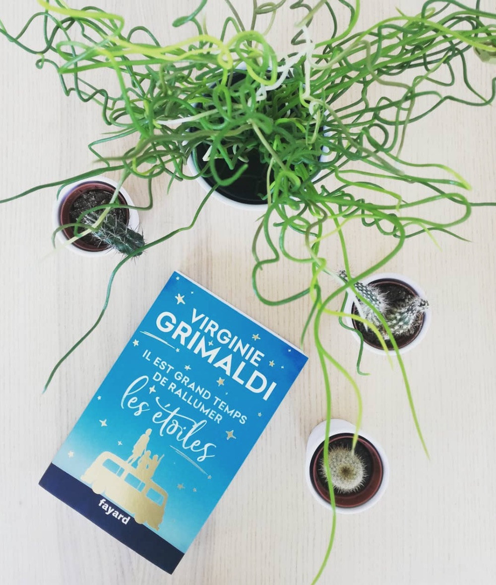
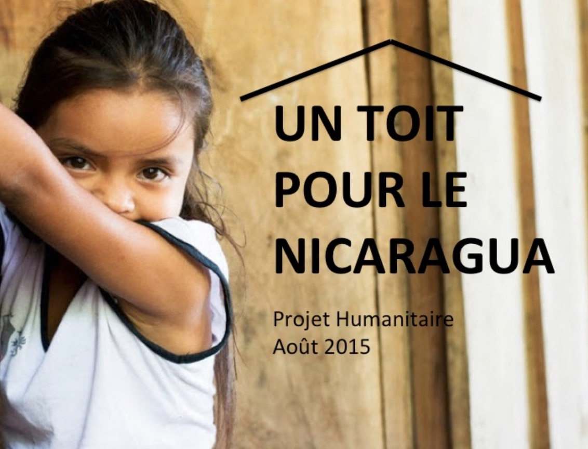

(Presque) Jeune diplômée en Marketing Digital, j'apprends actuellement les bases du HTML et du CSS! Ouverte sur le monde et curieuse du monde qui m'entoure, je souhaite pouvoir évoluer dans une entreprise dans l'ère du temps et consciente des enjeux actuels. Dès la rentrée de septembre 2019, je serai à la recherche d'un emploi dans le domaine du Marketing Digital.
Depuis quelques années, je me suis habituée à lire durant mes longs trajets quotidien. Un bon livre permet de se déconnecter, de couper avec le monde qui nous entoure. J'aimais beaucoup lire les avis de différents lecteurs sur Instagramm, alors un jour j'ai décidé de créer ma page afin de pouvoir également échanger sur mes ressentis après une lecture.
Un sac à dos et c'est parti ! Quoi de mieux qu'un voyage de quelques jours pour se déconnecter et découvrir de nouvelles villes, de nouveaux pays? A la moindre occasion, j'aime voyager quelques jours dès que c'est possible afin de voir ce qu'il se passe ailleurs. C'est enrichissant de voir ce qu'on fait derrière les frontières: la musique, la cuisine, les activités, les habitudes... Prochaine destination en vue? Et pourquoi pas l'Argentine?
Les voyages nous construisent et nous animent!
Le Nicaragua est un pays qui m'a fortement marqué, de part sa richesse culturelle et la bienveillance de sa population... En effet, j'ai été présidente de l'association Intervenir pendant 1 an, année pendant laquelle nous avons récolté près de 13 000€. Nous sommes partis 3 mois au Nicaragua afin de voir s'aboutir notre projet "Un toit au Nica 2017". Cette année-là nous sommes donc venus en aide à une famille de 5 personnes, une mère et ses 4 enfants.
Ensuite, nous avons participé à l'aménagement d'un local informatique à Miraflor, un village dans les montages à la périphérie d'Esteli. Miraflor est une magnigique réserve naturelle, préservée et aimée par sa population. Le local est destiné aux gens du village qui ne peuvent pas se rendre en ville facilement.
Le Nicaragua figure parmi les pays les plus pauvres du monde. Depuis plus de 20 ans, les associations Esteli Solidarité et Intervenir interviennent au Nicaragua afin d'aider les familles vivant dans des situations de grande précarité. L'objectif est de financer et construire un logement conjointement avec la famille bénéficiaire à la hauteur de ses moyens. Il s'agit d'un échange, d'entraide. Au fil des années, on suit les familles afin de voir si la maison est bien entretenue et s'ils ne manque de rien en terme de sécurité.
Actuellement en apprentissage chez Orange en tant qu' Assistante Chef de produits des services digitaux , j'aimerai pouvoir évoluer dans le domaine du marketing produit digital. Intéressée par les innovations de demain, le fait de pouvoir apporter des réponses aux besoins actuels est selon moi une réelle opportunité. C'est donc tout naturellement que j'ai voulu faire mon master Marketing Digital à l'Institut Mines Télécom Business School.